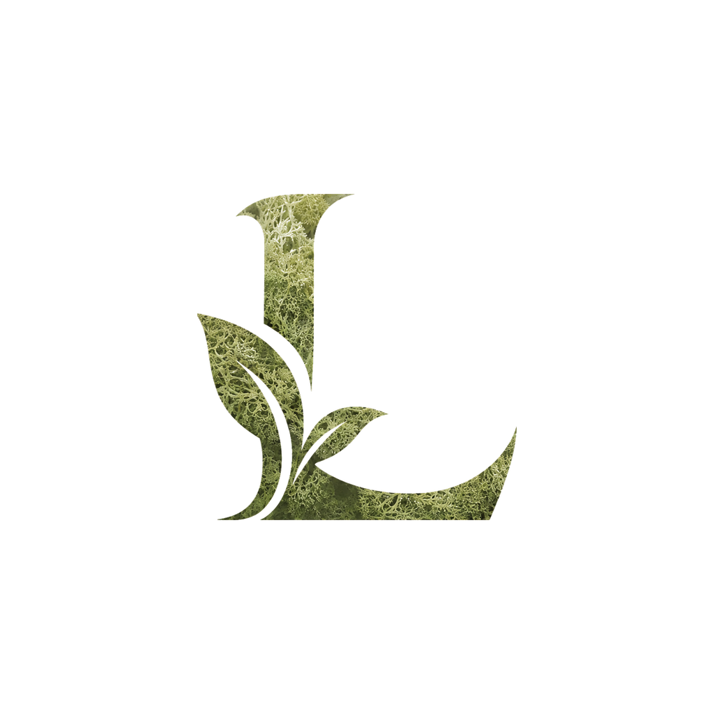
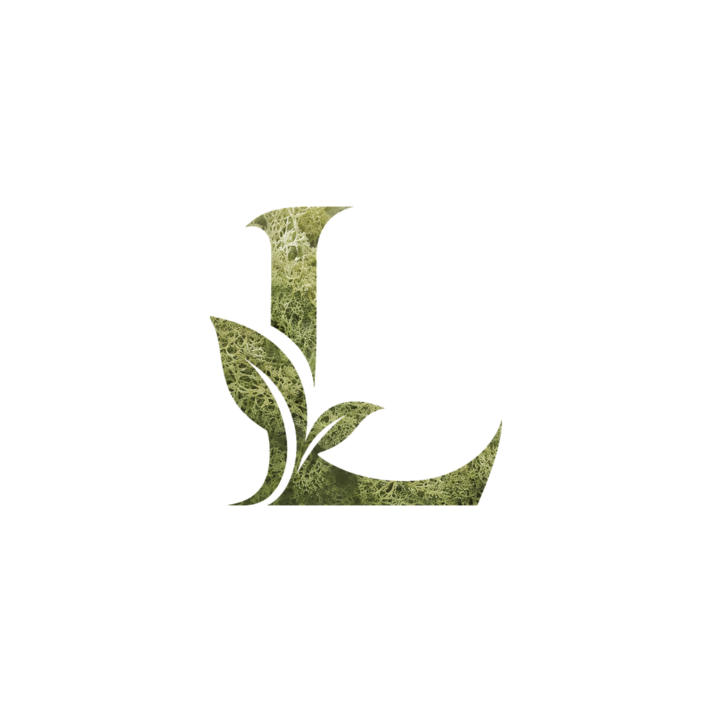
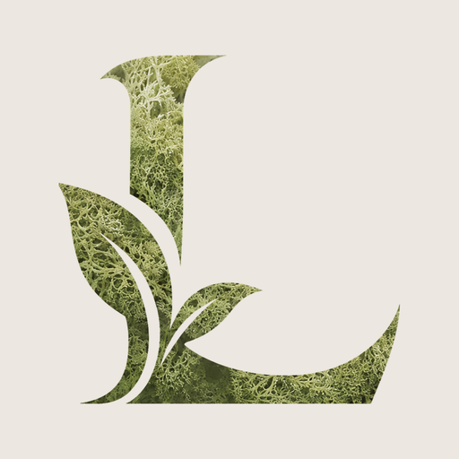
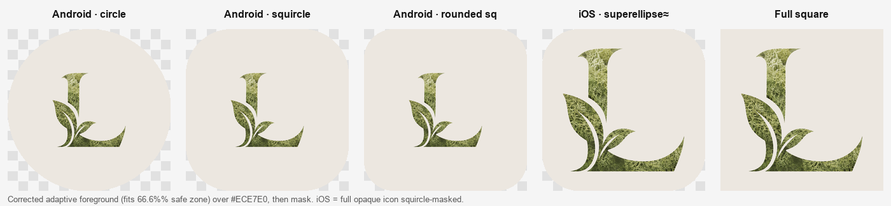
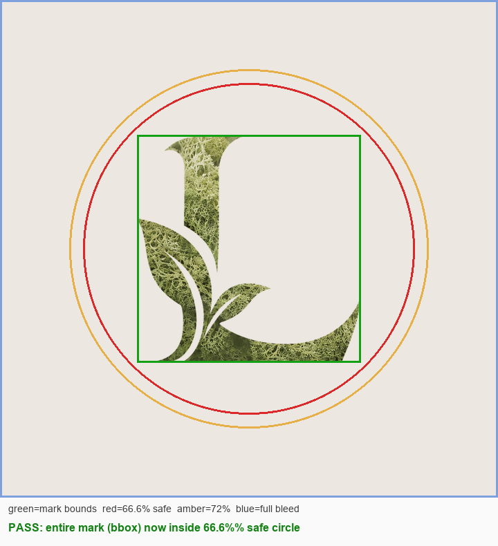
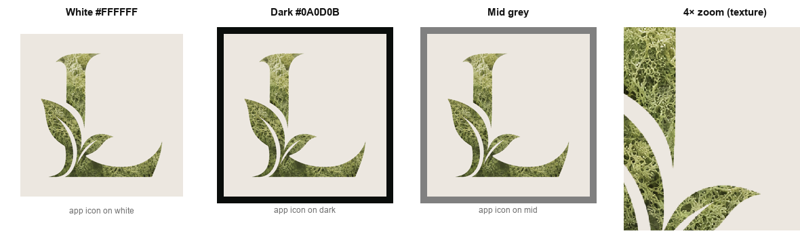
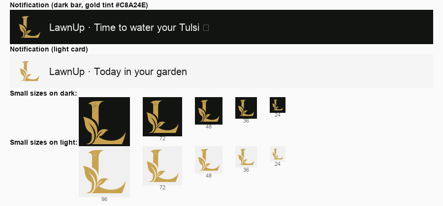
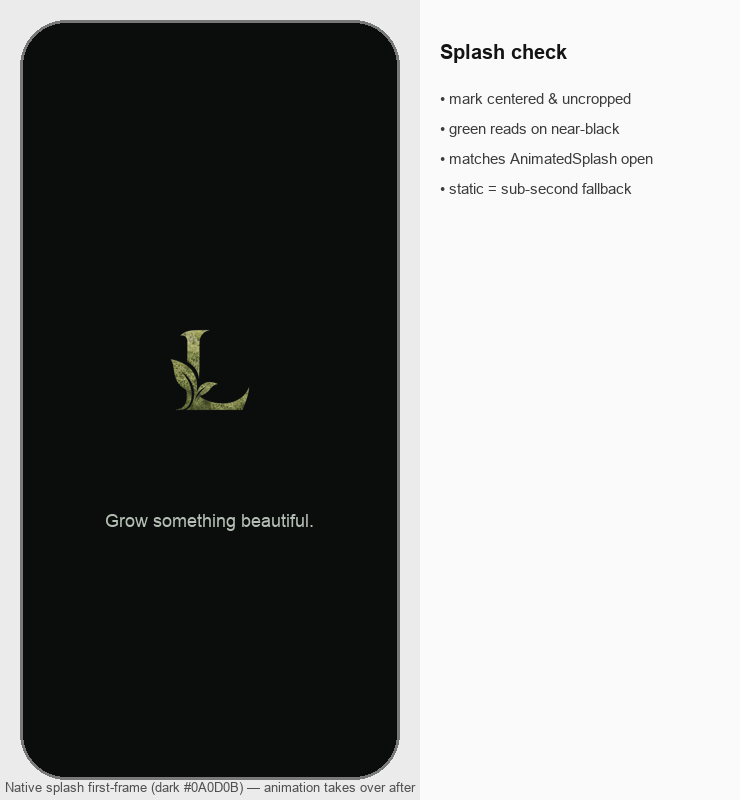
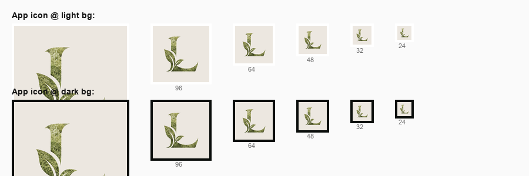
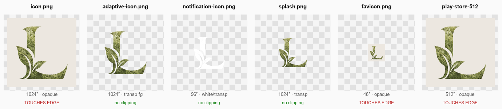

#ECE7E0 · splash dark #0A0D0B · notif tint #C8A24E.









| Asset | Resolution | Result | Issues found | Fix |
|---|---|---|---|---|
| icon.png | 1024×1024 | PASS | "Touches edge" in contact sheet = the opaque cream background filling the canvas (expected/required for iOS — no alpha). Logo itself has ~12% padding, not clipped. | None. |
| adaptive-icon.png | 1024×1024 | PASS (was FAIL → fixed) | Originally the mark reached 86.6% diameter — outside the 66.6% safe zone → clippable on aggressive launcher masks. | Regenerated at 63.9% diameter; now fully inside 66.6%. (Renders smaller on Android — normal. Can bump to ~72% if a larger look is wanted.) |
| notification-icon.png | 96×96 | PASS | Clear to ~36px on light & dark; at 24px (mdpi) the leaf detail merges but the L still reads — inherent to tiny notif icons. | None required. |
| splash.png | 1024×1024 | PASS | Green texture reads well on the dark first-frame; centered, uncropped; matches the AnimatedSplash open. | None. |
| favicon.png | 48×48 | PASS | Legible monogram at favicon size. | None. |
| play-store-icon-512.png | 512×512 | PASS | Matches the app icon; opaque; ≤1MB. | None. |
| Feature graphic 1024×500 | — | MISSING | Not generated (needs the Plus Jakarta wordmark + layout). | Produce via designer per the Phase-4 direction. |
Cross-cutting: icon cream #ECE7E0 differs slightly from the in-app ivory #F6F1EA — internally consistent across the icon set; unify later if desired. Native rebuild (expo prebuild + EAS) required for launcher/splash/notification to update on device.